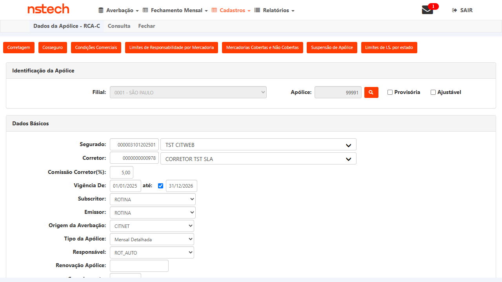
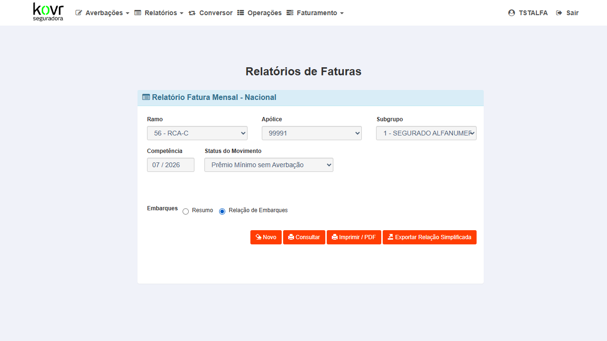
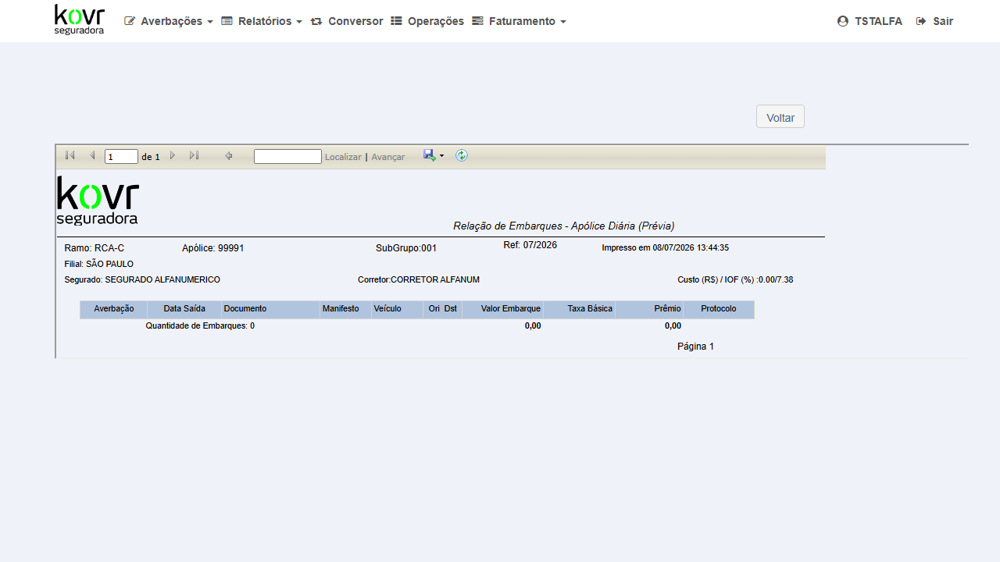
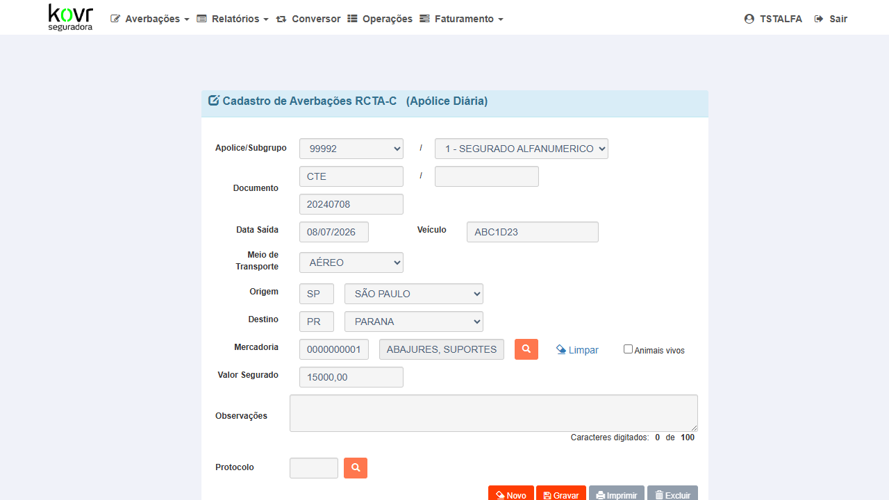
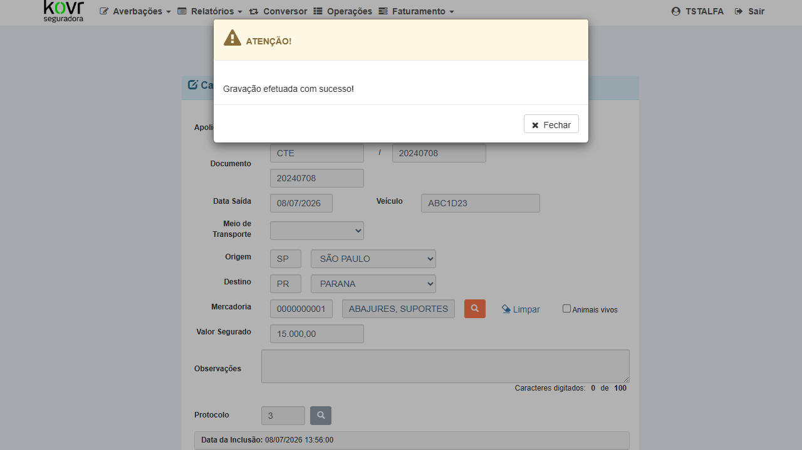
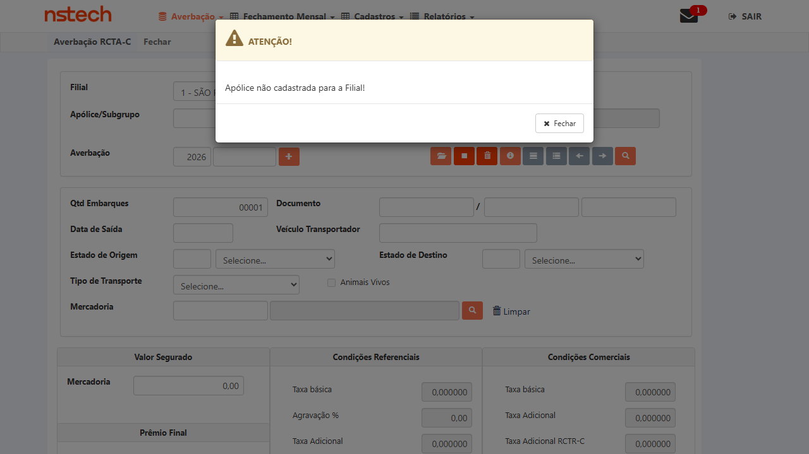
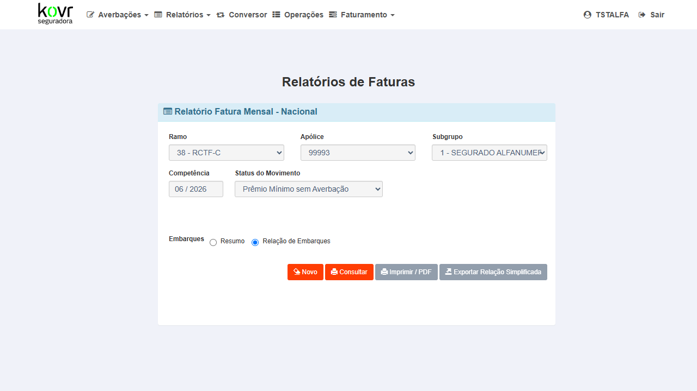

Contexto do Bug
Apólices 99991 (Ramo 56), 99992 (Ramo 52) e 99993 (Ramo 38) no CITNET KOVR ALFA: ao gerar Prévia / Relatório Mensal com perfil Segurado, o sistema exibia apenas a opção "Prêmio Mínimo Sem Averbação" mesmo com embarques averbados no CITNET. As averbações não replicavam para o CITWEB, tornando impossível selecionar averbações específicas na prévia.
▶CT-EMB-002P1Ramo 56 — Averbações do CITNET replicam no CITWEB (Apólice 99991)REPROVADO
Positivo — Replicação de dados
56 — RCA-C
CT-EMB-001 aprovado (login CITNET KOVR ALFA)
Apólice 99991 (Ramo 56) ativa com ao menos 1 averbação
Acesso ao CITWEB KOVR HML: https://kovr-hml-faturamento.nsseg.com.br/login/ com ROT_AUTO / T7Jjm6xF
No CITNET KOVR ALFA, navegar para Averbações → consultar averbações da apólice 99991 (Ramo 56)
Verificar que existe ao menos 1 averbação registrada — anotar o número
Capturar screenshot da lista de averbações no CITNET
Abrir novo tab ou acessar o CITWEB KOVR HML: https://kovr-hml-faturamento.nsseg.com.br/login/
Login com ROT_AUTO / T7Jjm6xF
Navegar para Internacional → Averbação → consultar apólice 99991 / Ramo 56
Verificar que as averbações aparecem na listagem do CITWEB
Capturar screenshot do CITWEB mostrando as averbações
✓ As averbações registradas no CITNET para apólice 99991 (Ramo 56) aparecem na consulta do CITWEB. Não há discrepância entre os registros dos dois sistemas.
✗ REPROVADO — RelatorioPrevia CITWEB Nacional retornou "Não existe movimento para o período informado." para Ramo RCA-C, apólice 0000000099991, mes=07/2026. Embarques averbados no CITNET ALFA não replicaram para o CITWEB. Bug #7621 confirmado.
Evidências
✗ Bug #7621 confirmado — embarques CITNET ALFA Ramo 56 não replicam no CITWEB Nacional (Relação de Embarques)

EV1 — DadosApolice: vigFim atualizado para 31/12/2026
Verificar que o relatório exibe embarques averbados — "Quantidade de Embarques" deve ser > 0
Capturar screenshot do resultado
✓ O relatório Relação de Embarques do CITNET ALFA exibe os embarques averbados para apólice 99991, Ramo RCA-C, competência 07/2026. "Quantidade de Embarques" ≥ 1.
✗ REPROVADO — Fatura Mensal CITNET ALFA (Relação de Embarques) retornou "Quantidade de Embarques: 0" para Ramo RCA-C, apólice 99991, SubGrupo 001, competência 07/2026. O relatório interno do próprio CITNET ALFA também não exibe os embarques averbados. Bug #7621 confirmado em ambos os sistemas (CITNET ALFA e CITWEB Nacional).
Evidências
✗ Bug #7621 confirmado no relatório interno CITNET ALFA — Relação de Embarques retorna 0 embarques para Ramo RCA-C / apólice 99991 / 07/2026

EV1 — CITNET ALFA: form Fatura Mensal preenchido (Ramo RCA-C / 99991 / 07/2026 / Relação de Embarques)

EV2 — FaturaReport: "Quantidade de Embarques: 0" — embarques não listados
Selecionar Filial 1 - SÃO PAULO, digitar apólice 99992
Verificar que a averbação criada no CITNET ALFA aparece no CITWEB
Capturar screenshot do resultado no CITWEB
✓ A averbação criada no CITNET ALFA (Protocolo 3, Ramo 52, apólice 99992) aparece no CITWEB Nacional. Registros consistentes entre os dois sistemas.
✗ REPROVADO — Averbação criada no CITNET ALFA com sucesso (Protocolo = 3, Data 08/07/2026). Ao acessar CITWEB KOVR Nacional → Averbação → RCTA-C e buscar apólice 99992 (Filial 1 - SÃO PAULO), o sistema retornou "Apólice não cadastrada para a Filial!". A averbação do CITNET ALFA não foi replicada para o CITWEB. Bug #7622 confirmado.
Evidências
✗ Bug #7622 confirmado — averbação RCTA-C criada no CITNET ALFA (Protocolo 3) não replicou para CITWEB Nacional (Ramo 52 / apólice 99992)

EV1 — CITNET ALFA: form RCTA-C preenchido (apólice 99992 / Subgrupo 1 / Doc CTE 20240708 / Data 08/07/2026)

EV2 — CITNET ALFA: "Gravação efetuada com sucesso! Protocolo = 3" — averbação registrada em 08/07/2026 13:56:00

EV3 — CITWEB KOVR Nacional RCTA-C: "Apólice não cadastrada para a Filial!" ao buscar apólice 99992 — bug confirmado
▶CT-EMB-005P1Ramo 52 — Relatório Mensal lista averbações na prévia (não só "Prêmio Mínimo")REPROVADO
Positivo — Validação de UI/relatório
52 — RCTA-C
CT-EMB-004 aprovado
Apólice 99992 com embarque averbado no mês corrente
Selecionar competência 07/2026, radio Relação de Embarques
Clicar Consultar
Verificar que averbações aparecem na relação de embarques
Capturar screenshot
✓ O relatório exibe a averbação criada no CITNET ALFA (Protocolo 3). "Quantidade de Embarques" deve ser ≥ 1.
✗ REPROVADO — Relatório "Relação de Embarques - Apólice Diária (Prévia)" gerado para Ramo RCTA-C / Apólice 99992 / Ref: 07/2026 exibe "Quantidade de Embarques: 0". A averbação criada no CITNET ALFA (Protocolo 3, Data 08/07/2026) não aparece na relação. Bug #7622 confirmado também no relatório CITNET ALFA.
Evidências
✗ Bug #7622 confirmado — Relação de Embarques mostra "Quantidade de Embarques: 0" para RCTA-C / apólice 99992 / Ref: 07/2026
Criar nova averbação: Série CTF, Doc 20240708, Data 08/07/2026, Veículo ABC1D23, FERROVIÁRIO, SP→PR, Mercadoria "ABAJURES..." (cód. 0000000001), Valor R$ 15.000,00
Clicar Gravar → confirmar "Gravação efetuada com sucesso!" (Protocolo 3)
✓ As averbações do CITNET para apólice 99993 (Ramo 38) estão visíveis no CITWEB. Replicação funcionando.
✗ REPROVADO — Averbação RCTF-C criada no CITNET KOVR ALFA (Protocolo 3, Apólice 99993, Ramo 38, Data 08/07/2026) não replicou para o CITWEB Nacional. Ao buscar apólice 99993 no CITWEB Nacional → AverbacaoRCTFC (Filial 1), o sistema retorna "Apólice não cadastrada para a Filial!", confirmando que os dados do CITNET ALFA não chegaram ao CITWEB. Bug #7623 confirmado.
Evidências
✗ Bug #7623 confirmado — Apólice 99993 (Ramo 38 RCTF-C) não replicou do CITNET ALFA para o CITWEB Nacional
Competência 07 / 2026 — mês onde a averbação (Protocolo 3) foi criada
Consultar → Status do Movimento carregado via AJAX (endpoint: AverbacaoNacional/ValidarPrevia)
Selecionar opção disponível → Gerar Relação de Embarques
Verificar Quantidade de Embarques
✓ O relatório mensal / prévia Ramo 38 exibe a averbação (Protocolo 3) como embarque. "Quantidade de Embarques: 1" ou mais, opção de movimento com embarques presente.
✗ REPROVADO — Status do Movimento carregou apenas "Prêmio Mínimo sem Averbação" (idMov: PRV;0). Ao gerar o relatório, Quantidade de Embarques: 0. A averbação RCTF-C criada no CITNET ALFA (Protocolo 3, Apólice 99993, Ramo 38, competência 07/2026) não aparece na Relação de Embarques, confirmando que os dados não estão sendo processados corretamente. Bug #7623 confirmado.
Evidências
✗ Bug #7623 — Relatório Mensal Ramo 38 RCTF-C: "Quantidade de Embarques: 0" após criação de averbação no CITNET ALFA
EV1 — CITNET KOVR ALFA: Relação de Embarques — Ramo RCTF-C, Apólice 99993, Ref. 07/2026, Quantidade de Embarques: 0. Averbação (Protocolo 3) não aparece. Bug #7623 confirmado.
Grupo 5 — Regressão1 CT
▶CT-EMB-008P2Regressão — "Prêmio Mínimo Sem Averbação" ainda disponível quando não há averbaçõesAPROVADO
Negativo — Regressão
38 — RCTF-C (apólice 99993, competência 06/2026 sem averbações)
Apólice 99993 (Ramo 38 RCTF-C) sem averbações para a competência 06/2026
Objetivo: confirmar que o comportamento base ("Prêmio Mínimo") permanece correto para períodos sem averbações
Consultar → Status do Movimento carregado via AJAX (AverbacaoNacional/ValidarPrevia)
Verificar que "Prêmio Mínimo sem Averbação" está disponível
Gerar Relação de Embarques → verificar Quantidade de Embarques: 0
✓ Para apólice sem averbações (competência 06/2026), a opção "Prêmio Mínimo Sem Averbação" aparece corretamente e o relatório mostra Quantidade de Embarques: 0 — comportamento base preservado.
✓ APROVADO — Status do Movimento exibiu corretamente "Prêmio Mínimo sem Averbação" para a competência 06/2026 (sem averbações). Relação de Embarques gerada com Quantidade de Embarques: 0 — comportamento base da feature funciona normalmente.
Evidências
✓ Regressão aprovada — "Prêmio Mínimo sem Averbação" funciona corretamente para competência sem averbações

EV1 — CITNET KOVR ALFA: ConsultaFatura Ramo 38 / Apólice 99993 / 06/2026 — Status do Movimento: "Prêmio Mínimo sem Averbação" disponível corretamente
EV2 — CITNET KOVR ALFA: Relação de Embarques Ref. 06/2026 → Quantidade de Embarques: 0 — correto para período sem averbações. Comportamento base preservado.